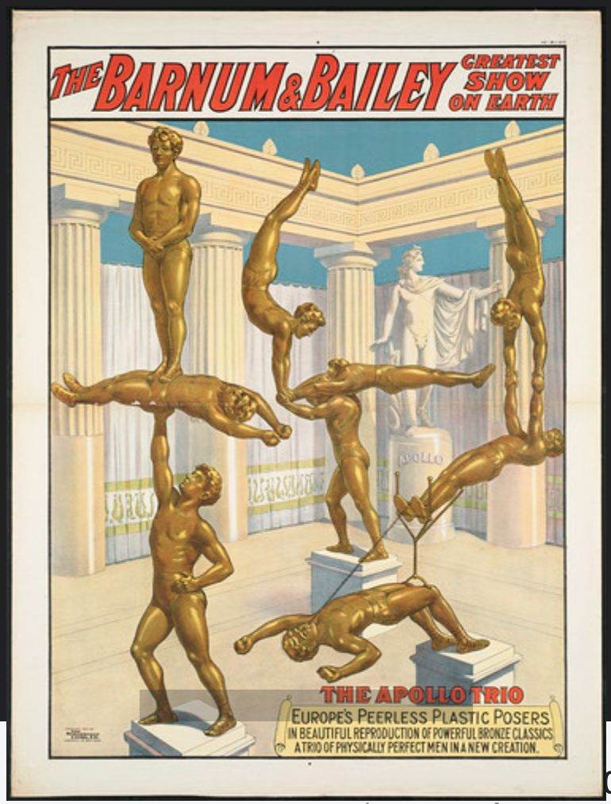
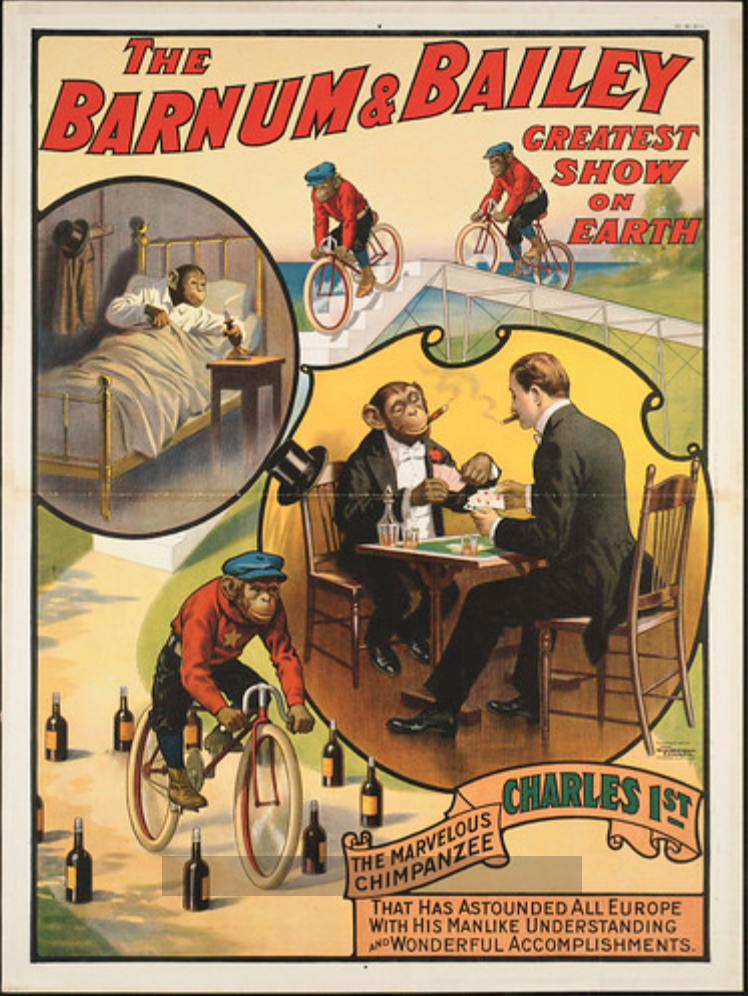
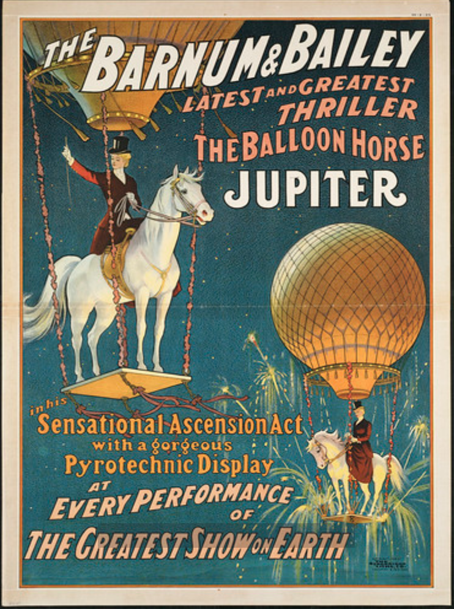
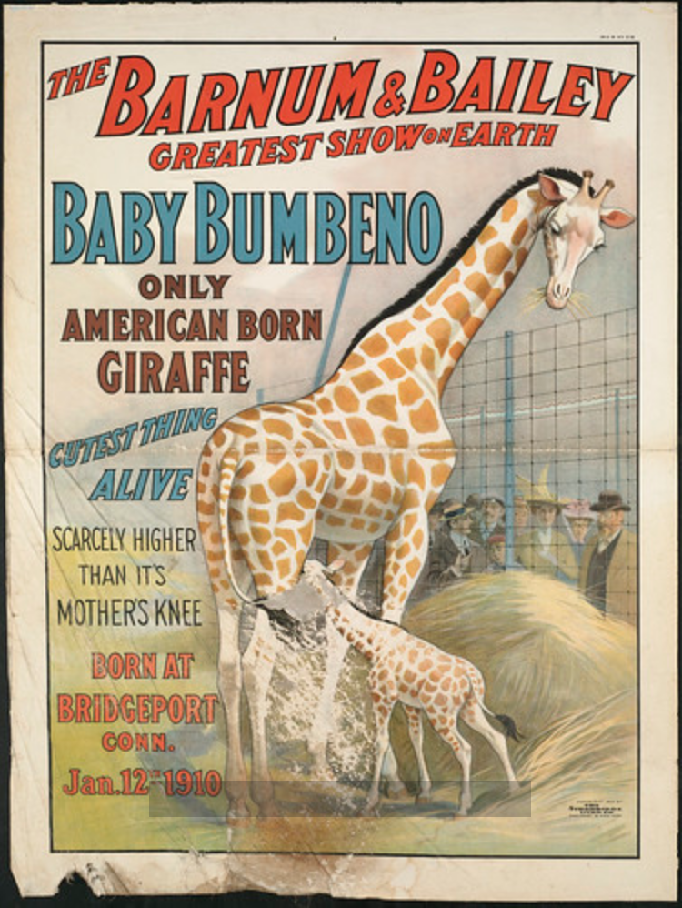

The Barnum & Bailey greatest show on earth: The Apollo trio

The Barnum & Bailey greatest show on earth: Charles 1st

The Barnum & Bailey latest and greatest thriller the balloon horse Jupiter : In his sensational ascension act with a gorgeous pyrotechnic display at every performance of the greatest show on earth

The Barnum & Bailey greatest show on earth : Baby Bumbeno, only American born giraffe, cutest thing alive